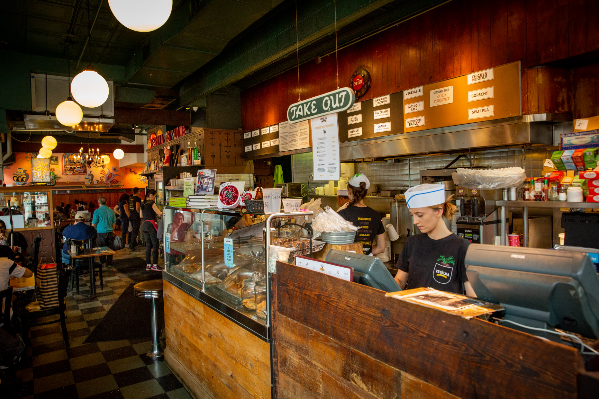
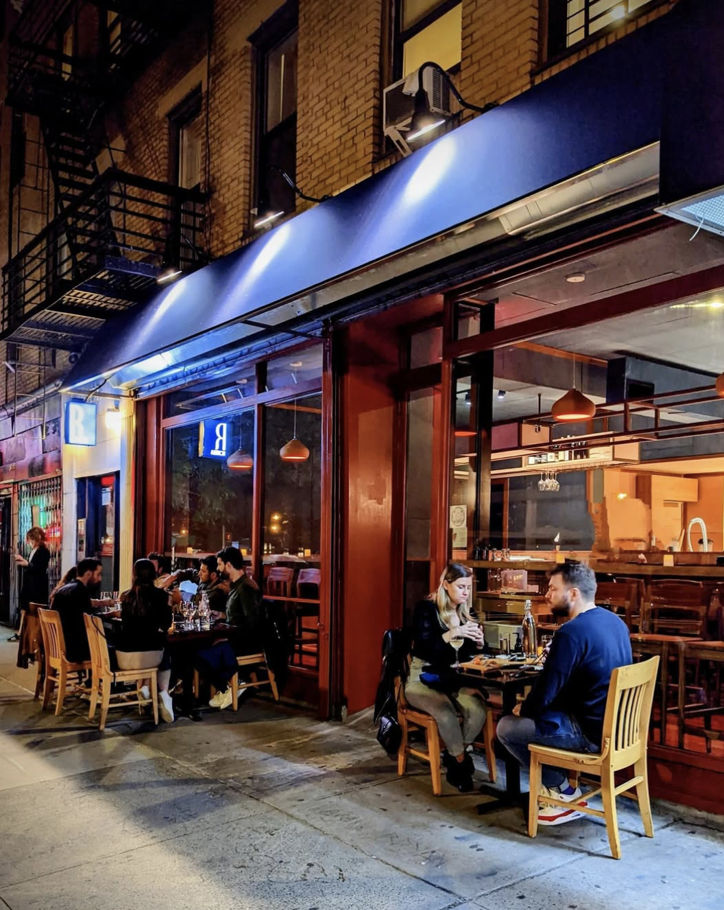
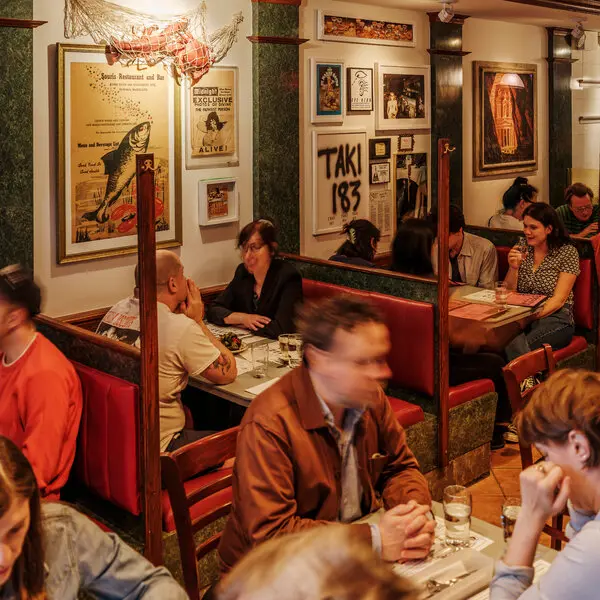
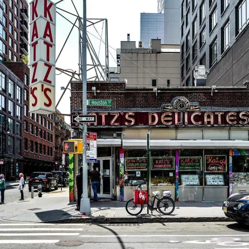

Top Rated Restaurants
Experience the best of East Village dining. From iconic establishments to Instagram-worthy dishes, these are the spots you can't miss on your culinary tour.

Veselka
Iconic 24-hour Ukrainian diner serving pierogi, borscht, and Eastern European comfort food since 1954. A true East Village institution.
$$ • Open 24 Hours
Most Photographed: Pierogies

Rosella
A modern sushi restaurant redefining sustainability with locally sourced fish and creative omakase experiences. The space is warm, minimal, and distinctly East Village.
$$$ • Evening hours
Most Photographed: Hand rolls & amberjack sashimi

Vanessa's Dumpling House
Casual Chinese eatery famous for hand-pulled noodles and incredibly affordable dumplings. Perfect for a quick, delicious bite.
$ • Cash Only
Most Photographed: Fried Dumplings

Abraço
Cozy espresso bar serving exceptional coffee and fresh pastries. The perfect morning stop in the East Village.
$ • Morning Hours
Most Photographed: Latte Art

Superiority Burger
Cult-favorite vegetarian counter serving creative burgers and sides. Minimalist space with maximum flavor.
$$ • Lunch & Dinner
Most Photographed: Superiority Burger

Katz's Delicatessen
Legendary Jewish deli since 1888, famous for sky-high pastrami sandwiches and its role in "When Harry Met Sally."
$$$ • Open Late
Most Photographed: Pastrami on Rye